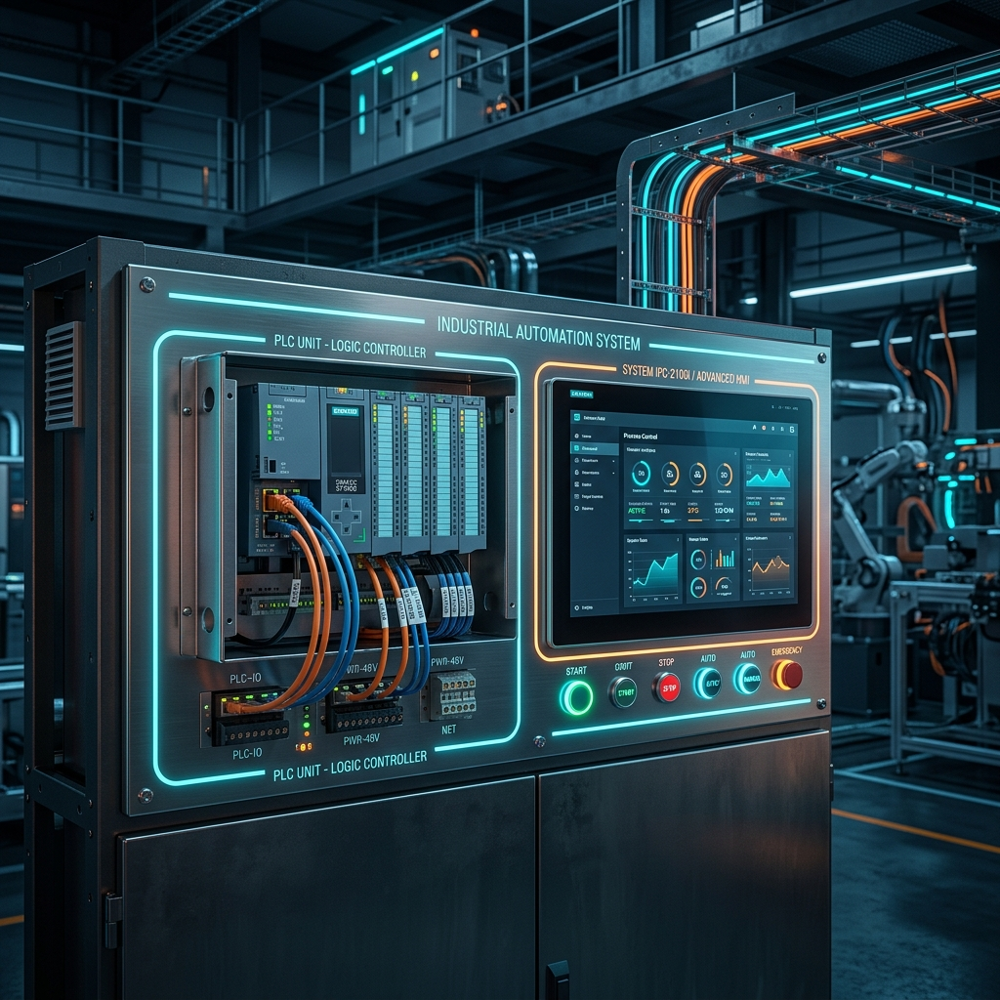
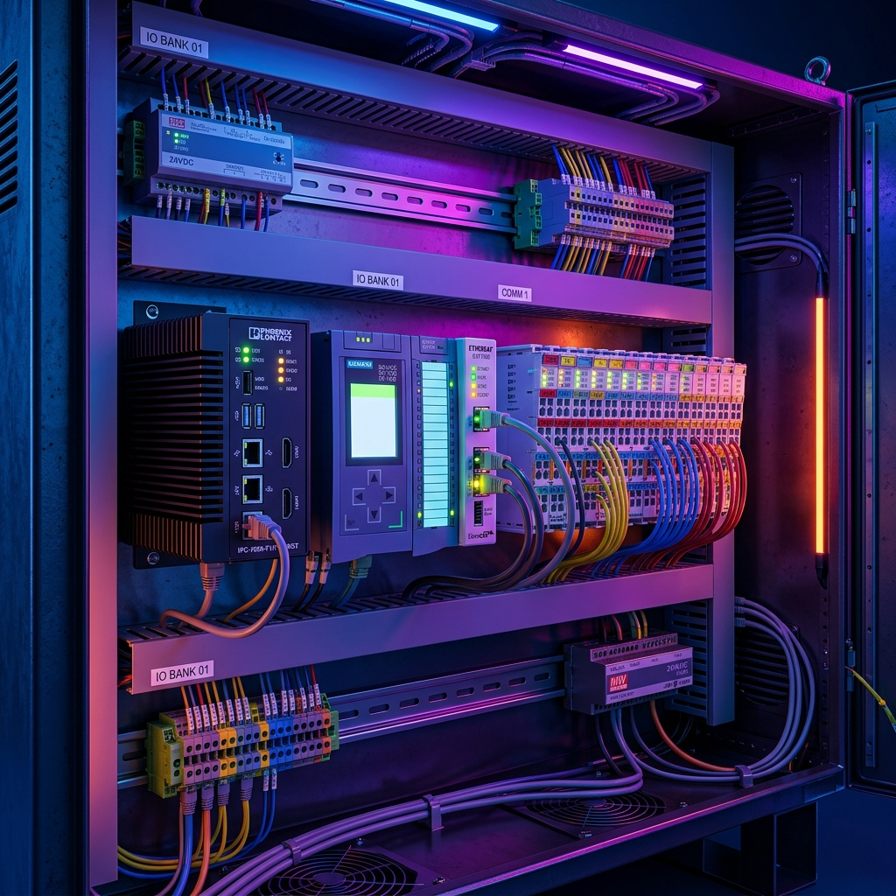

PLC vs. PC Industrial: ¿Cuál es Mejor para la Automatización de Procesos?
Publicado por el Equipo de Ingeniería de Robologix Automation | Coahuila, México
Resumen de Ingeniería:
El PLC (Controlador Lógico Programable) sigue siendo el estándar dominante en manufactura por su determinismo basado en ciclos de escaneo (scan-based), firmware propietario altamente inmune a virus informáticos y tolerancia extrema a ambientes severos de vibración, temperatura y ruido eléctrico. Por otro lado, el PC Industrial (IPC) combina la resistencia física del hardware industrial con sistemas operativos de tiempo real (Soft-PLC), permitiendo ejecutar algoritmos complejos en C++/Python, visión artificial, machine learning y procesamiento masivo de datos IIoT en una sola plataforma.

Visualización de gabinete industrial con controlador PLC y PC Industrial de pantalla táctil.
1. Diferencias Fundamentales de Arquitectura
Mientras que una computadora comercial de escritorio (PC) fue diseñada para procesamiento general conducido por eventos (event-driven), un PLC fue concebido desde sus cimientos para tareas de control en tiempo real estricto:
- Sistema Operativo: El PLC ejecuta un firmware propietario determinista sin capas innecesarias de software. El IPC corre sistemas Windows IoT Enterprise o Linux con parches de tiempo real (RTOS).
- Ejecución del Programa: El PLC realiza un barrido continuo (scan cycle) ininterrumpido. Un PC convencional ejecuta hilos asíncronos que pueden pausarse por actualizaciones del SO o servicios en segundo plano.
- Lenguajes de Programación: El PLC utiliza la norma IEC 61131-3 (Diagrama de Escalera, Texto Estructurado), ideal para personal de mantenimiento técnico en planta. El IPC permite además C#, C++, Python y redes neuronales.

Montaje en Riel DIN de controladores modulares PLC y módulos I/O de comunicación.
2. ¿Por qué el PLC Sigue Siendo el Rey en la Nave Industrial?
- Resistencia Extrema a la Intemperie: Los componentes del PLC cuentan con un rango de temperatura operativa de -20°C a 70°C, protección contra picos de voltaje y aislamiento galvánico de I/O.
- Robustez de Ciberseguridad Nativa: Al carecer de navegador web comercial o servicios innecesarios de red, la superficie de ataque cibernético de un PLC es inmensamente menor.
- Diagnóstico y Reemplazo en Caliente: Un electricista de turno puede diagnosticar una falla en minutos mediante luces LED integradas y reemplazar un módulo dañado sin requerir conocimientos de programación avanzada.
3. El Surgimiento del PC Industrial (IPC) y los Soft-PLCs
En celdas de manufactura avanzada que requieren integrar Visión Artificial para control de calidad, procesamiento de código de barras a alta velocidad o cálculo de modelos matemáticos complejos, un PLC convencional puede quedar limitado en capacidad de cómputo.
Aquí entran los PCs Industriales (IPCs) ejecutando motores Soft-PLC (como Beckhoff TwinCAT o CODESYS Control). Estos equipos dividen los núcleos del procesador: dedican núcleos aislados exclusivamente al tiempo real de control determinista y otros núcleos a la interfaz HMI y análisis de datos en la nube.
Asesoría Técnica con Robologix Automation
Evaluamos la velocidad, ambiente de trabajo y requerimientos de visión artificial de tu celda.
Integración de IPCs para cámaras de inspección Cognex / Keyence comunicadas con PLC de control.
Soporte de ingeniería en sitio en los corredores industriales de Saltillo y Ramos Arizpe.
Artículos Técnicos Relacionados:
¿Requiere Asesoría Técnica para Diseñar el Hardware de Control de su Celda?
En Robologix Automation evaluamos la arquitectura óptima (PLC vs. IPC) para sus proyectos de automatización en Saltillo y Ramos Arizpe.
Hablar con un Ingeniero de Automatización